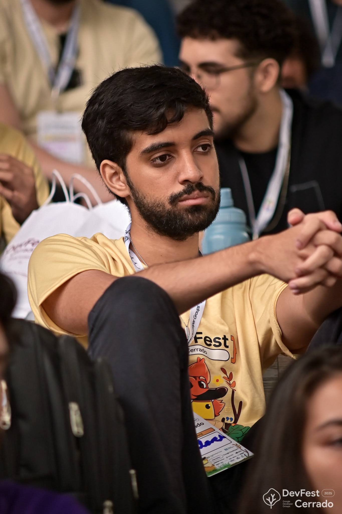
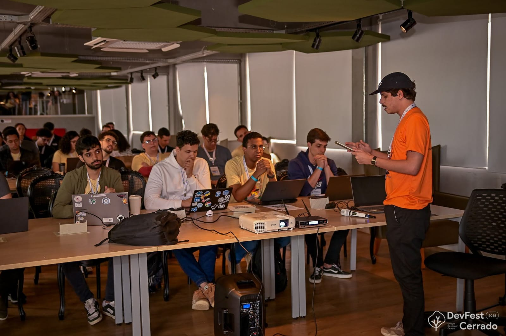
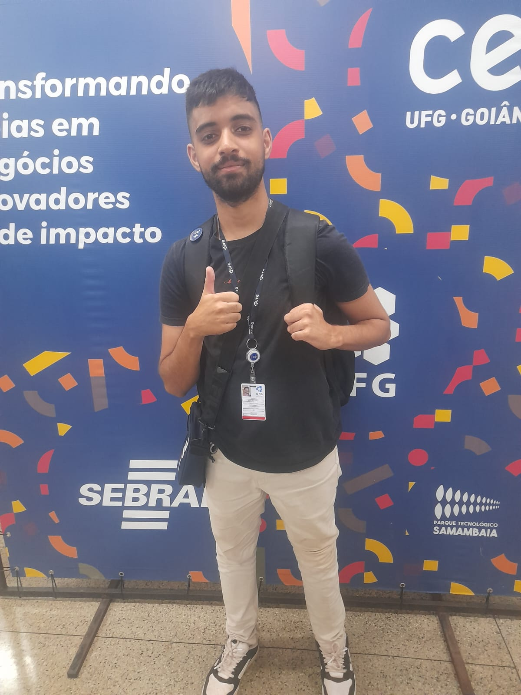

Wallace Barros
Liderança técnica construída com disciplina e prática real. Formado em Matemática Aplicada e Computacional pela UFG. Experiência consolidada em TI e objetivo de desenvolver novos profissionais com base sólida.
Ver minha visão como líder
Sobre mim
Dedico aproximadamente 10 horas diárias entre estudo e trabalho — uma rotina disciplinada que combina formação acadêmica (Matemática Aplicada e Computacional pela UFG) e atuação profissional no mercado de TI.
Minha visão de liderança está ancorada em estrutura, organização e direcionamento técnico. Acredito em crescimento constante e no desenvolvimento de pessoas por meio de base sólida. Atualmente realizo uma transição estratégica da web para microcontroladores e sistemas low-level, buscando domínio técnico mais profundo.
Presença & ecossistema


Habilidades técnicas
Programação
Python, JavaScript, TypeScript, C — código limpo e boas práticas.
Desenvolvimento Web
HTML5, CSS3, APIs REST, arquitetura de sistemas escaláveis.
Git & GitHub
Versionamento, colaboração, automação de fluxos e code review.
Linux & Servidores
Administração de VPS, shell script, Docker, ambientes de produção.
Microcontroladores / C
Integração com Arduino, sistemas embarcados, programação low-level.
Organização de projetos
Metodologias ágeis, documentação técnica, liderança técnica de squads.
Habilidades sociais
Comunicação clara
Alinhamento de expectativas, feedback direto e explicações acessíveis.
Colaboração e confiança
Trabalho em equipe com autonomia, responsabilidade e respeito mútuo.
Mentoria e desenvolvimento
Formação de base sólida, orientação prática e crescimento contínuo.
Visão estratégica
Priorização, foco no impacto e decisões alinhadas ao negócio.
Resolução de conflitos
Mediação objetiva, foco em soluções e clima saudável do time.
Disciplina e consistência
Ritmo de entrega, processos estáveis e cultura de responsabilidade.
Experiência & Projetos
⏺️ WordPress → solução robusta
Problema: site WordPress desatualizado, baixa performance, estrutura limitada.
Ação: propus e desenvolvi plataforma técnica estruturada com automações e foco em performance.
Resultado: solução escalável, alinhada aos objetivos de negócio e com aumento expressivo de performance.
🤖 Agente com memória (VPS)
Agente autônomo hospedado em VPS, integrado a LLM via API e Telegram. Memória persistente, agendamento de tarefas, criação de scripts e capacidade de auto-expansão. Arquitetura complexa com foco em integração de sistemas.
⚙️ API em C / microcontroladores
Projeto de aprofundamento em C para integração com Arduino e sistemas embarcados. Parte da transição estratégica para low-level, visando domínio técnico mais profundo.
Visão de liderança
- Criar um núcleo forte de TI dentro da comunidade, com direcionamento prático.
- Ajudar iniciantes a se estruturarem por meio de base sólida (lógica, fundamentos, disciplina).
- Construir cultura de responsabilidade técnica e entregas consistentes.
- Elevar o nível médio do grupo, com foco em web, programação estruturada e microcontroladores.
- Estimular rotina técnica e mentoria contínua.
Estou pronto para liderar o braço de TI
Disciplina real, capacidade técnica e visão estratégica para desenvolver pessoas e construir um núcleo de excelência.
📩 Falar comigo ↑ Topo